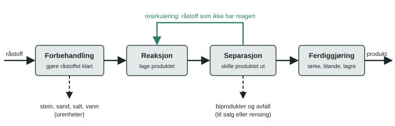

Hvorfor operasjonene kommer i denne rekkefølgen
Du har nå lært om pumper, varmevekslere, filtre, kolonner og reaktorer hver for seg. I et anlegg står de etter hverandre i en bestemt rekkefølge, og rekkefølgen er ikke tilfeldig. Den bestemmer om anlegget lager et godt produkt, hvor mye energi det bruker, og hvor lenge utstyret varer. En operatør som forstår rekkefølgen, forstår også hva som skjer lenger nede i anlegget når noe går galt i ett trinn.
Mønsteret i nesten alle anlegg
På siden Hva er en enhetsoperasjon? så du at mange anlegg følger mønsteret forbehandling – reaksjon – separasjon. Ofte kommer det et fjerde trinn til slutt, ferdiggjøring, der produktet tørkes, blandes til riktig kvalitet, pakkes eller lagres.

- Forbehandling: Råstoffet gjøres klart. Det kan knuses, siktes, renses, løses opp, blandes, varmes eller settes under trykk.
- Reaksjon: Råstoffene blir til produktet i en reaktor eller en ovn.
- Separasjon: Ut av reaktoren kommer en blanding av produkt, råstoff som ikke har reagert, og kanskje biprodukter. Blandingen skilles, for eksempel ved destillasjon, filtrering eller krystallisering.
- Ferdiggjøring: Produktet får den formen og kvaliteten kunden skal ha.
Mellom alle trinnene flyttes stoffene med pumper, kompressorer og transportbånd, og temperaturen endres med varmevekslere. Disse operasjonene finnes overalt i anlegget.
Oppstrøms og nedstrøms
Det som ligger før et trinn i anlegget, er oppstrøms. Det som kommer etter, er nedstrøms. Alt som skjer oppstrøms, påvirker trinnene nedstrøms. Kommer det for mye vann med råstoffet, får reaktoren, kolonnen og tørken problemer lenger nede. Derfor må operatøren i hvert trinn vite hva som kommer inn, og hvor det skal videre.
Seks regler for rekkefølgen
Den som bygger et anlegg, velger rekkefølgen ut fra noen enkle regler. Du har møtt dem alle i de andre emnene.
1. Gjør råstoffet klart før reaksjonen
En reaksjon går best når stoffene har riktig størrelse, renhet, temperatur og trykk. Fast stoff knuses og males for å få stor overflate, slik du så i Knusing og maling. Stoffer som skal reagere, blandes godt og varmes til riktig temperatur før de går inn i reaktoren.
2. Fjern det som skader utstyret, så tidlig som mulig
Stein, sand, salt og vann kan slite på pumper, tette varmevekslere, gi korrosjon eller ødelegge en katalysator. Derfor fjernes slike urenheter tidlig. Et patronfilter foran en pumpe tar bort partikler som ellers ville slitt på pumpa (se Filtrering). I et raffineri vaskes saltet ut av råoljen før den destilleres. Det ser du på neste side.
3. Grovt før fint
Det grove skilles ut først, og det fine til slutt. Syklonen tar de store støvkornene før posefilteret tar de små (se Syklon og støvfilter). Et sandfilter står foran et patronfilter (se Filtrering). Det fine utstyret er dyrt og tetter seg lett. Får det bare det fine støvet, varer det lenger og må rengjøres sjeldnere. Det samme gjelder sortering før knusing: En stangsikt foran knuseren lar steiner som allerede er små nok, falle mellom stengene og gå forbi. Da får knuseren bare de store steinene som trenger knusing (se Sikting).
4. Mekanisk før termisk
Det er billig å skille vann fra fast stoff med tyngdekraft, filter eller sentrifuge. Det er dyrt å fordampe vann med varme. Derfor fjernes mest mulig vann mekanisk først, og tørken eller inndamperen tar bare resten (se Tørking og krystallisering). Ofte står en fortykker først, så et filter, og til slutt en tørke.
Oppgave: Et slam på 1000 kg inneholder 400 kg fast stoff og 600 kg vann. Produktet skal tørkes. Hvor mye vann må tørken fordampe hvis slammet går rett inn i tørken? Og hvor mye hvis den først går gjennom et filter som gir en filterkake med 25 % vann (av massen)?
Løsning:
- Rett i tørken: Alt vannet må fordampes, altså 600 kg.
- Filteret først: Det faste stoffet blir i kaka. Når kaka har 25 % vann, er 75 % av kaka fast stoff. Kakas masse er \( \dfrac{400 \text{ kg}}{0{,}75} = 533 \text{ kg} \).
- Vannet i kaka er \( 533 \text{ kg} - 400 \text{ kg} = 133 \text{ kg} \). Resten av vannet, 467 kg, går ut som filtrat.
Svar: Uten filter må tørken fordampe 600 kg vann. Med filter først må den bare fordampe 133 kg. Det er under en firedel, og tørken bruker tilsvarende mindre energi. Massebalanser for separasjon regner du mer med i Separasjon i Fysiske prinsipper.
5. Skill etter reaksjonen, og send tilbake det som ikke reagerte
Nesten ingen reaksjon blir helt ferdig. Etter reaktoren kommer derfor en separasjon som skiller ut produktet. Råstoff som ikke har reagert, sendes ofte tilbake til reaktoren. Det kalles resirkulering, og det er den grønne pilen i figuren. Slik blir nesten alt råstoffet brukt. Les mer i Resirkulering og utbytte i Fysiske prinsipper.
6. Bruk varmen på nytt, og rens det som slippes ut
En varm strøm som skal kjøles, kan varme en kald strøm som skal varmes. Derfor står det ofte en varmeveksler mellom det som går ut av en kolonne eller reaktor, og det som går inn. Se Energigjenvinning i Fysiske prinsipper. Til slutt renses gass og vann før de slippes ut, for eksempel i en gassvasker eller et støvfilter.
Noen trinn går i batch, andre går kontinuerlig. Mellom dem står ofte en buffertank, slik at trinnene kan gå i hvert sitt tempo. Se Batch og kontinuerlig drift.
Rekkefølgen i et anlegg tegnes i et blokkskjema eller et teknisk flytskjema. Hvordan du leser og tegner dem, lærer du i Tekniske flytskjemaer.
- Feil forplanter seg nedstrøms: Stopper en pumpe eller tetter et filter, merkes det også i trinnene etterpå. Nivået kan stige i tanken før, og trinnet etter kan gå tomt. Si fra til de andre operatørene når noe endrer seg i ditt trinn.
- Start og stopp i riktig rekkefølge: Et anlegg startes og stoppes trinn for trinn etter en prosedyre. Starter du et trinn før det neste er klart, kan en tank bli overfylt eller en pumpe gå tørr. Se Øv: Overfylling av tank i HMS.
- Forbikobling: Et filter eller et rensetrinn som kobles forbi, kan skade utstyret nedstrøms eller gi ulovlige utslipp. Det skal bare gjøres etter avtale og prosedyre.
Test deg selv
1. Hvilket mønster følger mange prosessanlegg?
- Separasjon – reaksjon – forbehandling
- Forbehandling – reaksjon – separasjon
- Reaksjon – forbehandling – separasjon
Først gjøres råstoffet klart, så reagerer det, og til slutt skilles produktet fra resten av blandingen.
2. Hvorfor står syklonen før posefilteret?
- Syklonen tar det grove støvet, så posefilteret bare får det fine og tetter seg mindre
- Posefilteret tåler ikke luft som har gått gjennom en syklon
- Syklonen tar det fine støvet, og posefilteret tar det grove
Regelen er grovt før fint. Det fine utstyret varer lenger når det slipper å ta det grove.
3. Hvorfor går slam gjennom et filter før det går til tørken?
- Fordi tørken ikke tåler fast stoff
- Fordi det er mye billigere å fjerne vann mekanisk enn å fordampe det
- Fordi filteret gjør produktet varmere
Å fordampe vann krever mye energi. Filteret fjerner det meste av vannet nesten uten energi, og tørken tar bare resten.
4. Hva betyr det at en pumpe står nedstrøms for en varmeveksler?
- At pumpen står lavere enn varmeveksleren
- At pumpen sender væsken til varmeveksleren
- At væsken går gjennom varmeveksleren før den kommer til pumpen
Nedstrøms betyr senere i strømmen. Det har ingenting med høyden å gjøre.
5. Hva er resirkulering i et anlegg?
- At avfallet sendes til gjenvinning utenfor anlegget
- At råstoff som ikke har reagert, skilles ut og sendes tilbake til reaktoren
- At produktet går gjennom reaktoren to ganger for å bli renere
Separasjonen etter reaktoren skiller ut råstoffet som ikke har reagert. Det sendes tilbake, så nesten alt råstoffet blir brukt.
Ordliste
| Begrep | Forklaring | Engelsk |
|---|---|---|
| forbehandling | Trinnene der råstoffet gjøres klart for reaksjonen, for eksempel knusing, rensing, blanding eller oppvarming. | pretreatment |
| ferdiggjøring | De siste trinnene, der produktet får riktig form og kvalitet, for eksempel tørking, blanding, pakking og lagring. | |
| oppstrøms | Det som ligger før et trinn i anlegget, i den retningen stoffene kommer fra. | upstream |
| nedstrøms | Det som ligger etter et trinn i anlegget, i den retningen stoffene strømmer videre. | downstream |
| resirkulering | Å sende en del av en strøm tilbake til et tidligere sted i prosessen, slik at stoffet blir brukt på nytt. | recycle stream |
| forbikobling | Å gå utenom: enten å lede strømmen utenom et utstyr, eller å koble ut en forrigling for en kort tid. Å koble ut en forrigling krever tillatelse. | bypass |
Les mer
- Hva er en enhetsoperasjon?: mønsteret forbehandling – reaksjon – separasjon.
- Massebalanse i anlegg i Fysiske prinsipper: hvordan du regner på strømmene gjennom flere trinn.
- Tekniske flytskjemaer: hvordan rekkefølgen tegnes.
Om kildene: Teksten, eksemplene og figurene på denne siden er laget for dette nettstedet. Siden bygger på undervisningsopplegg i kjemiprosess- og laboratoriefag ved Sauda vgs, som er utarbeidet med utgangspunkt i blant annet Kjemien stemmer, Laboranten og åpne nettkilder.